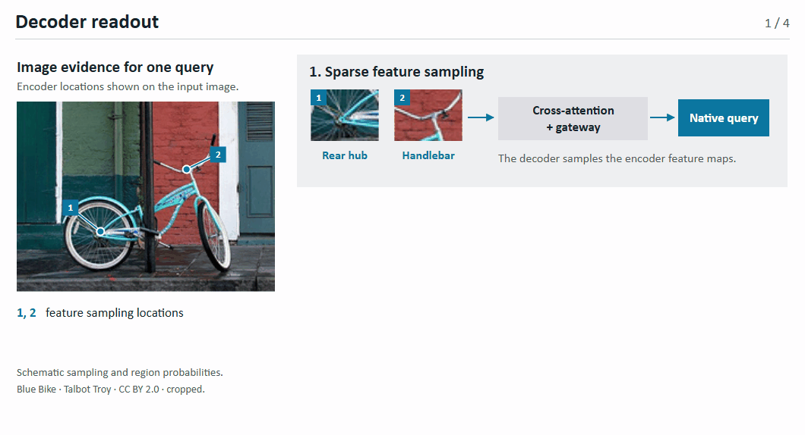

Boundary-State DETR
From Box Distributions to Query Refinement


초록
두 예측이 서로 다른 영역에 높은 확률을 주더라도 평균 박스는 같을 수 있다. 평균 박스만 다음 층의 공간 참조로 넘기면 두 예측을 구분하기 어렵다. Boundary-State DETR는 직전 층의 경계 분포를 이용해 다음 검출 쿼리에 어떤 영상 특징을 담을지 결정한다. 마지막 디코더 층에서 후보 영역마다 Mamba 상태를 쌓고, 경계 확률에 따라 합친 상태에서 읽어 낸 특징을 cross-attention을 거친 쿼리에 더한다.
여러 후보 영역에는 같은 주변 장면의 특징이 섞일 수 있다. 학습할 때는 이 문맥 성분을 줄인 뒤에도 같은 객체를 검출하도록 한다. 입력을 한 번 인코딩한 뒤 정답 박스 바깥의 특징을 평균하고, 그 일부를 특징 맵에서 뺀다. 보조 디코더는 이렇게 얻은 특징을 Mamba 상태에 기록할 내용과 스텝 크기 Δ에 함께 쓴다. 추론할 때는 원래 특징으로 디코더를 한 번 실행한다.
연구 동기와 목표
물체의 색이나 질감이 주변과 비슷하면 여러 영역이 그럴듯한 경계 후보가 된다. 각 영역이 담은 영상 특징은 다르지만, 경계 좌표를 평균하면 그 차이가 사라질 수 있다. 반대로 서로 다른 후보가 같은 주변 문맥을 공유하기도 한다. 이 두 현상이 검출 쿼리에 어떤 영향을 주는지가 연구의 출발점이다.
- 경계 후보마다 다른 근거를 남긴다. 각 후보 영역 안에서 상태를 먼저 구하고 경계 확률에 따라 합친다.
- 쿼리가 물체의 어떤 근거를 유지하는지 살핀다. 주변 장면과 공유하는 성분을 특징 공간에서 줄이고 같은 클래스와 박스를 예측하도록 학습한다.
핵심 기여
- 경계 분포를 이용한 상태 집계(BCSA). 직전 층이 예측한 경계 확률에 따라 후보 영역의 특징을 합쳐 쿼리를 갱신한다. 같은 해상도의 구간별 상태 계산은 여러 쿼리가 공유한다.
- 특징 공간에서 문맥 조절. 각 학습 입력은 백본과 인코더를 한 번씩 거친다. 해상도마다 정답 박스 바깥의 특징을 채널별로 평균해 그 장면의 문맥을 추정한다.
- 내용과 스텝 크기에 같은 특징을 입력. 제안 방식은 보조 경로에서 문맥 성분을 줄인 특징을 쓰기 내용과 Δ에 함께 넣는다. 비교 실험에서는 같은 증강 일정과 손실을 쓰면서 Δ에만 넣는다.
Advancing DETR Object Detection


Boundary-State DETR

후보 영역을 이용한 쿼리 보정

주변 문맥은 보조 상태 갱신에 어떻게 들어갈까?

content-and-delta는 조정한 특징을 쓰기 내용과 Δ에 함께 넣는다. delta-only는 쓰기 내용에 원래 특징을 사용한다. 두 설정 모두 마지막 층 일반 쿼리의 분류·L1·GIoU 손실을 합산한 보조 손실에 가중치 0.1을 적용한다.COCO val2017 객체 검출 결과
제안 모델은 ImageNet 가중치로 초기화한 HGNetv2를 백본으로 사용하며, 외부 교사 없이 COCO train2017으로 학습한다. S·M·L·X는 각 크기의 RT-DETRv4 증강 일정에 따라 각각 132·102·58·58 epoch 학습한다. 검증은 val2017 전체 5,000장에 640 × 640 단일 입력으로 진행한다. 쓰기 내용과 Δ에 함께 변형 특징을 쓰는 새 설정의 전체 AP는 아직 측정 전이다.
HGNetv2 기반 검출기와의 비교
| 검출기 | 크기 | 백본 | 박스 AP |
|---|---|---|---|
| D-FINE | L | HGNetv2-B4 | 54.0 |
| DEIM-D-FINE | L | HGNetv2-B4 | 54.7 |
| Boundary-State DETR · 제안 방식 | L | HGNetv2-B4 | 측정 전 |
이전 Boundary-State DETR 학습 결과
쓰기 내용과 Δ에 함께 변형 특징을 넣는 학습을 도입하기 전의 결과다.
| 이전 모델 | AP | AP50 | AP75 | APS | APM | APL |
|---|---|---|---|---|---|---|
| Boundary-State DETR-S | 49.7 | 66.7 | 53.8 | 32.0 | 53.5 | 66.4 |
| Boundary-State DETR-L | 55.5 | 73.1 | 60.4 | 37.1 | 60.1 | 72.9 |
이전 실험 · COCO 체크포인트에서 12 epoch 추가학습
이 실험은 COCO로 학습한 검출기에서 시작해 cross-attention을 교체했던 초기 설계를 비교했다. 위 본학습과 학습 조건 및 디코더 구조가 다르다.
| 디코더 구성 | AP |
|---|---|
| 기본 디코더 (B0) | 55.455 |
| 후보 사각형의 기대 상태 | 55.461 |
| 단일 박스 | 55.016 |
| 점유 확률 가중 풀링 | 55.354 |
| 입력과 무관한 상태 전이 | 55.205 |